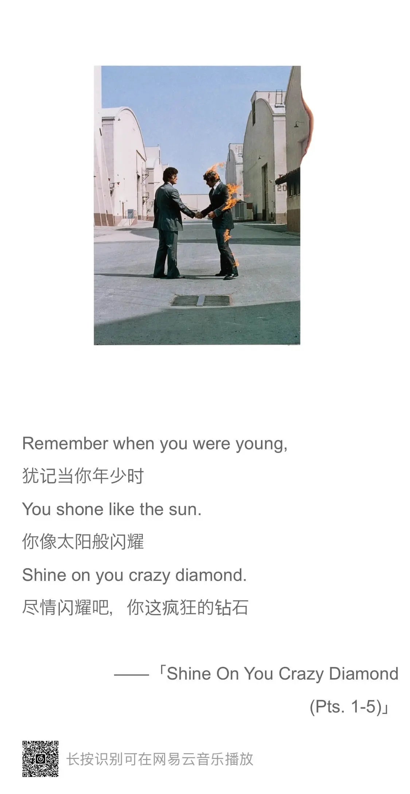

Zine#2
News | Article
面试远程工作必问的关键问题及注意事项
远程面试的时候可以用来参考一下。
Why Do Rubber Ducks Work?
- 橡皮鸭调试
- 通过对话，避免思维过于跳跃，从而让人可以放慢速度思考；对话也有一种教人的意味，教人就需要对内容有更深的理解，迫使去思考多一些。
- 淋浴效果
- 淋浴，散步都能让人放松，在放松时思维更活跃。如果有时思路卡住了，不妨出去透透气。
What makes a great technical blog
- 文章能解答一些难题或让人困扰的东西
- 有清晰的，可以运行起来的例子 (see also: Code Snippets)
- 将复杂的话题变得简单，清晰易懂
- 定期更新
- 不忽视负面风险，没有什么是完美的
- 行文避免花里胡哨的俚语，Emoji，粗口，咆哮等 (see also: Avoid jargon and cliches)
SearchGPT
OpenAI 出了一个 SearchGPT，前阵子申请通过，已经用了两三天。
总体来说还是比较稳定的，不会出现频繁连不上的情况。
它能记住你的上下文，这应该是相比传统搜索比较大的不同，有了上下文，或许就能找到更贴切的答案。
SearhGPT 还有一个 Chrome 扩展，可以替换掉默认的搜索引擎，现在在地址直接搜索，就会直接用 SearchGPT。
不过有时我只是希望搜索一些文档/网站地址，SearchGPT 总是先输出它的分析结果，链接相对没有那么明显，对于这种场景不太方便。
另外，SearchGPT 对于一些内容还是有审查的，会查不出来结果。
Segment Anything Model 2
Segment Anything Model 现在不仅可以从图片中分离内容，还可以中视频中分离了。
《一人企业方法论》V2.1
《一人企业方法论》第二版，也适合做其他副业（比如自媒体、电商、数字商品）的非技术人群。
我觉得如果能独立开发，并且收入过得去，能够自由安排时间是件很 cool 的事情。
但要做到并不容易，一方面是技术能力，另一方面是技术以外的，如推广，运营等。
作者这本小册子整理了一些他的经验，或许可以借鉴一下。
Code
SVG triangle of compromise
文章写了几种在 Web 使用 SVG 的方法：
<img>- inline SVG
- SVG with
<use> - iframe
然后从可修改样式，可缓存，固有尺寸三个维度去分析这几种方法的优劣。
Please Stop Using Barrel Files
A barrel is a file that does nothing but re-export things from other files. Usually, those are named
index.jsorindex.ts
Barrle Files 指的是前端开发中的 index.js 文件，往往这个文件的作用就是导入和导出一些模块，方便导入模块的时候用。 但这样使用，可能存在问题：
- 循环导入
- 导入了一些没用到的模块，拖慢了导入时间
所以文章作者提倡不用 index.js ，只在编写库（写一个 package）的时候使用。
Garbage collection and closures
文章指出了一种因为闭包，导致 JS 无法进行垃圾回收的情况。
Cool Bit
Enhanced Data
Immersive data visualization experiments powered by Three.js + Svelte + SvelteKit.
网站通过比较丰富的形式去呈现数据，看起来挺炫酷的。
Tool
revezone
一款以图形为中心、轻量级、本地优先的用于构建第二大脑的效率工具。
支持 Excalidraw、Tldraw 白板和类 Notion 笔记。
site2pdf
Generate comprehensive PDFs of entire websites, ideal for RAG.
找到一个网站下的所有链接，将它们生成 PDF。
Tailwind CSS Color Generator
选择一个主色，生成一个同色系的色板。
比较好的是做了一些页面元素，用于查看颜色在不同页面元素上的应用。
以后如果需要一个色板，或许可以用用。
ask 小宇宙
搜索小宇宙的内容，复古的 UI 不错，交互上看应该也是接入了 AI。
GitHub Profile 装饰
- Awesome List of GIFs & avatars to use in GitHub.
- 一些可以放在 Profile 的 GIFs，像是 Git，Vue 的 logo。
- Elevate your GitHub Profile ReadMe with Minimalistic Retro Terminal GIFs
- 也是可以放在 Profile 的 GIF，不过是命令行的动画。
microjs
一个用于搜索小体积库的网站。
WORD SLICER
一个划词游戏，在手机上适配不错，页面简洁，游戏也挺有趣。
火烧云分析与记录
我喜欢看天空，看云，尤其是日落时分，夕阳会把天空染得很好看。
这个网站可以搜索全国城市的火烧云出现情况，要是哪天火烧云出现概率很大，不妨找个海边，山顶，坐等一场绚丽的火烧云。
Depth Of Field Simulator
景深模拟器，如果对照相机中景深的概念不了解，可以通过这个网站比较直观地去了解景深。
所谓景深，我理解是指焦平面（焦点所在的平面）前后影像的清晰范围。
在景深之中，景就是清晰的，景深之外，就会虚化了。
通过控制景深，就可以得到一些人像清晰，但背景虚化的照片。
Music
{kind=link}

这周听的比较多的一张专辑是 Pink Floyd 的 《Wish You Were Here》。
专辑第一首的 Shine On You Crazy Diamond (Pts. 1-5) 前奏很长但也好听，歌词也比较喜欢。
同名曲 Wish You Were Here 也不错。
上面两首歌应该都是表达离开乐队的成员的怀念。
关于 Wish You Were Here，在另一首歌《不再让你孤单》中也有一段类似诗歌一样的念白，撒娇的嗓音和念白都好听。